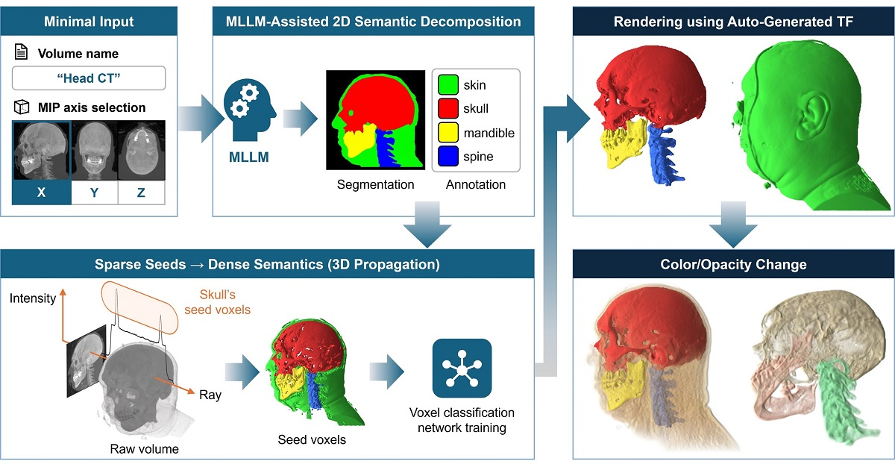

Automatic Transfer Function Design via
MLLM-Assisted 2D Semantic Decomposition
Abstract
Designing transfer functions (TFs) for direct volume rendering is a fundamental yet labor-intensive task, as users need to carefully explore the relationship between voxel attributes and visual outcomes to reveal structures of interest. Despite advances in learning-based approaches, many existing methods depend on repeated user input. Furthermore, many methods relying on conventional data value-based TFs, which use voxel intensity or gradient information, often struggle to separate voxels into meaningful semantic groups. To address these problems, we present a framework that enables automatic TF design via multimodal large language model (MLLM)-assisted 2D semantic decomposition, requiring only minimal user input, namely the volume name and a projection axis. Starting from a single maximum intensity projection of the volume, our method transforms it into a semantic segmentation mask using an MLLM, which is then lifted into 3D as a sparse set of reliable voxel cues. To convert these sparse cues into a complete semantic representation, we introduce a voxel classification network trained with a confidence-aware propagation loss, resulting in dense voxel-level semantic assignments that are readily translated into TFs. Despite relying solely on single-image segmentation, our method achieves precise part-level separation. Evaluation on a range of volume datasets shows that ours produces better semantic renderings while significantly reducing the effort and time required for TF design compared to state-of-the-art techniques.
Overview

Overview of our framework for automatic semantic transfer function (TF) design. Given only minimal user input—a volume name and an MIP axis—we generate a single projection that is semantically decomposed by an MLLM into labeled regions. These 2D semantic cues are lifted into sparse 3D seed voxels and propagated through a voxel classification network to obtain dense voxel-level semantics. The resulting semantic TF enables intuitive, part-aware volume rendering without manual TF design. After the TF is automatically generated, users can interactively adjust the color and opacity of each semantic part.
Results

Comparison of semantic volume rendering results across eight datasets using different approaches. Each row corresponds to a dataset, showing the input MIP, the MLLM-generated segmentation mask, and the resulting visualizations produced by our method, ParaView-MCP under two configurations, and SAM3D.